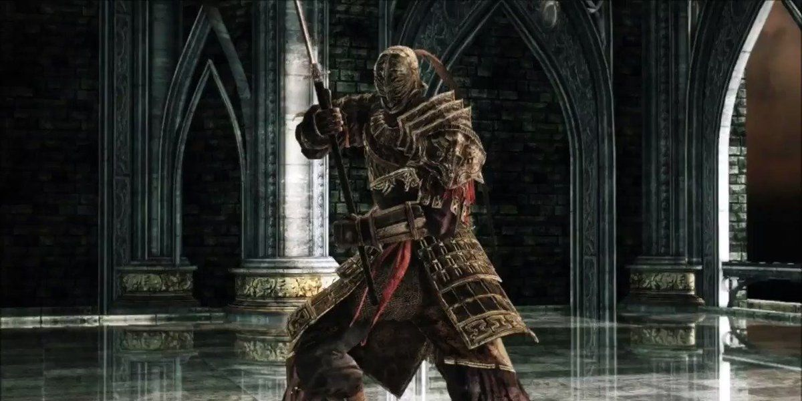

Bosses principales de Dark Souls II
1. Fume Knight
Fume Knight es uno de los jefes más temibles de Dark Souls II, recordado por su implacable agresividad y su brutal espadón doble imbuido en fuego y oscuridad. Su trágica historia como un caballero caído y repudiado lo convirtió en la prueba definitiva de habilidad para cualquier jugador.
